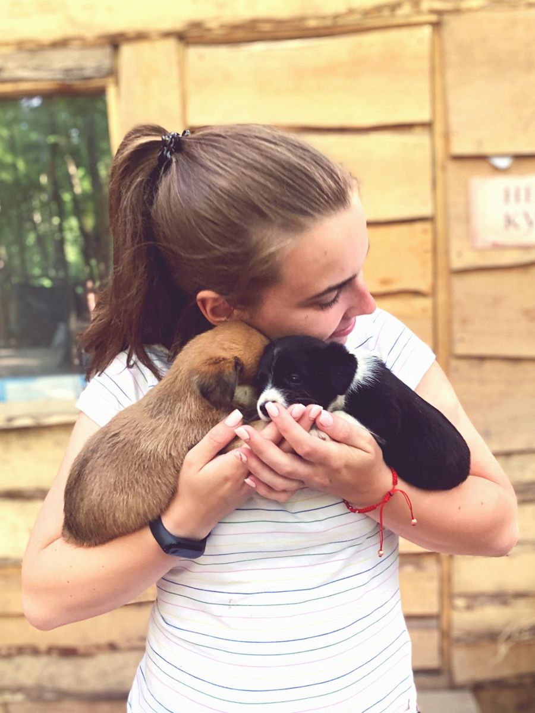

[Ejemplo: una semana de comida para un cachorro.]
Únete a la red
Cómo ayudar
Somos una fundación sin fines de lucro y todo lo que hacemos es posible gracias a personas como tú.
Donaciones
Tu aporte
Tu aporte
se convierte en
Cualquier monto ayuda. Estos son ejemplos de lo que cubre tu donación. [Revisar montos con la fundación.]
[Ejemplo: vacunas y desparasitación de un animal rescatado.]
[Ejemplo: la esterilización de una gata o perrita.]
[Ejemplo: atención veterinaria de emergencia tras un rescate.]
Cómo donar
Elige tu forma
Elige tu forma
de aportar
Después de tu transferencia, envíanos el comprobante por Instagram o correo para agradecerte.
Transferencia bancaria
- Banco
- [BANCO]
- Tipo
- [Ahorros / Corriente]
- Número
- [NÚMERO DE CUENTA]
- Titular
- Fundación Red de Rescate Animal EC
- RUC
- [RUC]
- Correo
- [CORREO]
Donaciones en especie
También recibimos insumos en nuestro punto de acopio:
- Alimento balanceado para perros y gatos (cachorros y adultos).
- Arena para gatos, mantas y camas.
- Medicinas y material de curación (consúltanos antes).
- Collares, correas y transportadoras.
Punto de acopio: [DIRECCIÓN Y HORARIO]

Voluntariado
Presta tus manos
Presta tus manos
y tu tiempo
Buscamos personas comprometidas que quieran sumar desde lo que mejor saben hacer.
- Rescate y traslados: si tienes vehículo, nos ayudas a llevar animales al veterinario.
- Jornadas de adopción: acompaña a los animales y conversa con las familias.
- Cuidado diario: paseos, limpieza, juego y socialización.
- Comunicación: fotografía, diseño y redes sociales.
Hogar temporal
Una casa mientras
Una casa mientras
llega su familia
Un hogar temporal le da a un animal recién rescatado la tranquilidad que necesita para recuperarse. La fundación cubre la comida y la atención veterinaria.
Tú pones
Un espacio seguro, tiempo y mucho cariño durante algunas semanas o meses.
Nosotros ponemos
Alimento, veterinario, acompañamiento y la búsqueda de su familia definitiva.
Juntos logramos
Que un animal más deje la calle y llegue listo a su nuevo hogar.

Comparte y
multiplica
Síguenos y comparte nuestras publicaciones. Muchas adopciones empiezan con alguien que compartió una historia.